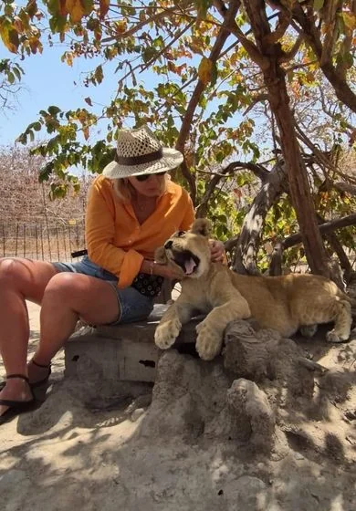
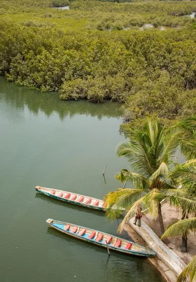
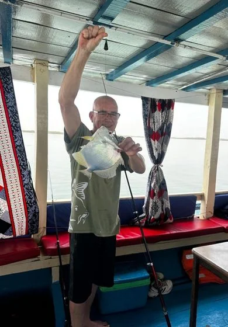
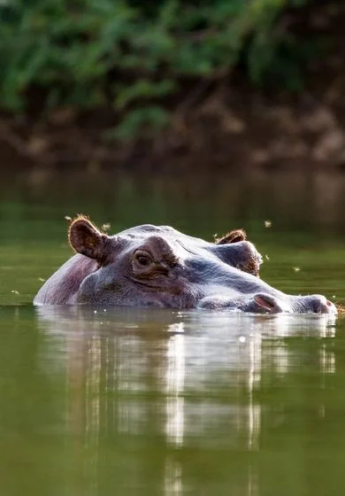
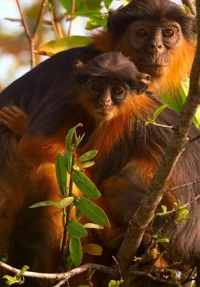
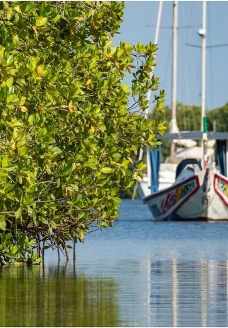
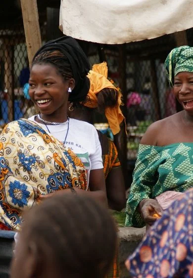
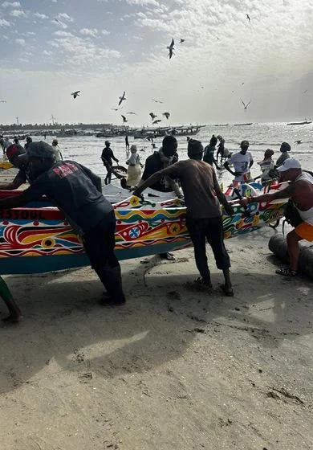
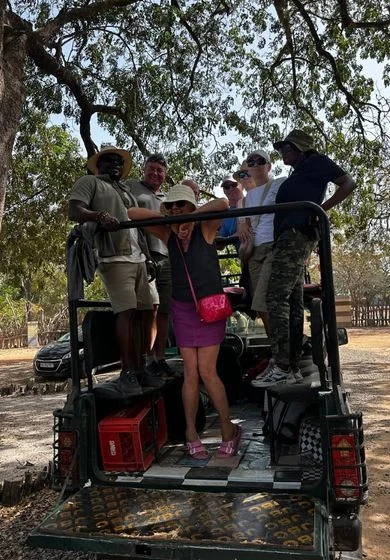
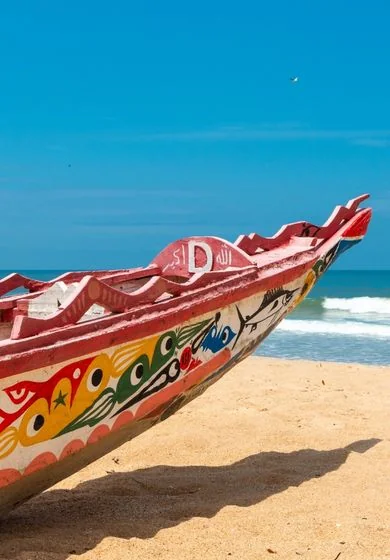

Gambia River & Heritage Day
A private Gambia River tour with slow viewpoints, local villages, optional boat time and history-focused stops.
- River and creek viewpoints
- Village and craft stops
- Optional boat add-on
US$110from / per person
EnquireBookings open · 2026–2027
Day trips, river days, Senegal safaris and journeys that go a little further. Find your route, then let us help with the details.
Private tours and shared departures are both available. Prices and currencies are shown for each route; your final arrangements are confirmed before booking.
A private Gambia River tour with slow viewpoints, local villages, optional boat time and history-focused stops.

A gentle early morning birdwatching tour around wetlands, coastal habitats and quiet observation points.

Cross into Senegal for a 4×4 safari in Fathala Wildlife Reserve, with a guided lion-walk option arranged in advance. A full day of wildlife and changing landscapes.

Spend a day among Makasutu’s forest paths and mangrove waterways, with a guided walk, boat trip, outdoor lunch and a traditional dance performance.

A relaxed day aboard a double-deck boat: try fishing, watch the riverbanks, enjoy lunch on board or simply settle into the slower rhythm of the River Gambia.

Explore quiet mangrove channels by kayak, with time for birdlife, river scenery and a closer look at life along the water. Ask us to plan an outing that fits your pace.

An intensive one-day alternative for travelers who want to reach central Gambia without an overnight stay. Ask us to confirm the river activities and stops that fit the express schedule.

A flexible first-day tour for travelers who want beaches, local life, short cultural stops and a relaxed introduction to The Gambia.

A guided Banjul tour through market streets, craft stalls, colonial history and everyday city life.

Make the most of your day ashore with a private excursion shaped around your ship’s schedule: Banjul, nature, boat trips or safari possibilities.

One day, several sides of The Gambia: a guided walk in Bijilo Forest Park, the cultural heritage of Kachikally, Serrekunda Market and a local artist’s studio.

A thoughtful journey into the region’s history: visit Kunta Kinteh Island and the river communities of Albreda and Juffureh, with classic ferry and premium private-boat options.

Discover historic Banjul, the river mouth and two lively markets in one day. This shared-departure route includes Albert Market and Serrekunda Market, with Thursday departures on request.

A relaxed coastal tour with beach time, photo stops, local stories and a soft sunset finish.

Discover Kachikally, cruise near Lamin Lodge, pause at Sanyang Paradise Beach and see coastal life in Tanji. A varied day with transport, a boat trip and Gambian lunch.

A private 7-day Gambia and Senegal itinerary through Banjul, the coast, river landscapes and the Casamance region.

A richer private 7-day Senegambia tour with Gambia highlights, Senegal nature or wildlife stops, villages and cross-border culture.

A complete private West Africa itinerary from Dakar through Lac Rose, Fathala, Banjul, Kunta Kinteh Island, Abuko, Janjanbureh and Wassu.
Travel inland for river scenery around Janjanbureh and Baboon Islands, an overnight stay and the historic Wassu Stone Circles. A deeper look at The Gambia beyond the coast.

Combine a 4×4 safari in Senegal’s Fathala Wildlife Reserve with an overnight lodge stay and a boat trip among the mangroves of the Saloum Delta.

An eight-day journey from The Gambia to Dakar and back, combining Bandia safari, Gorée Island, the Saloum Delta, Kunta Kinteh Island and time on the coast.

Tell us your travel style and build a private Gambia excursion around coast, river, culture, food, markets or photography.